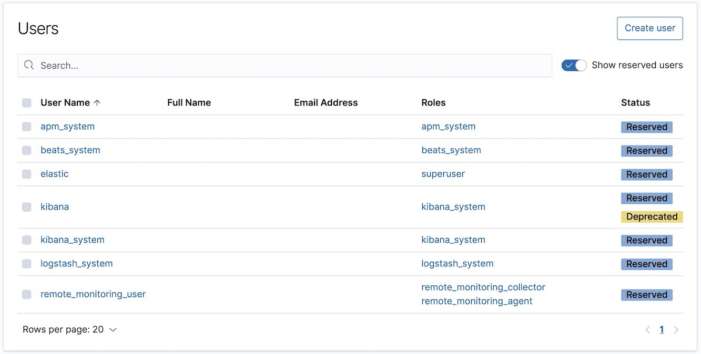
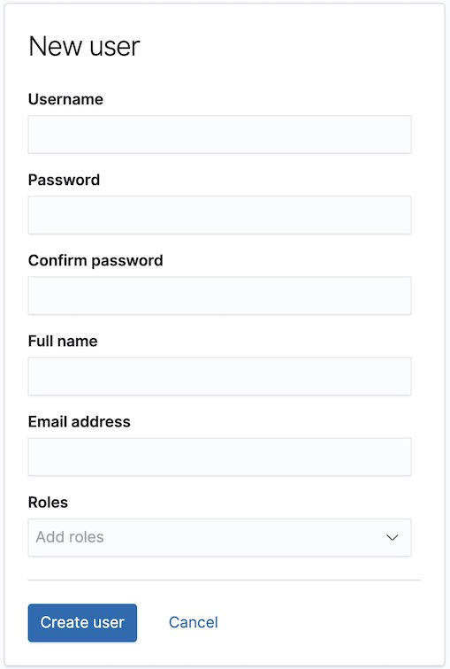
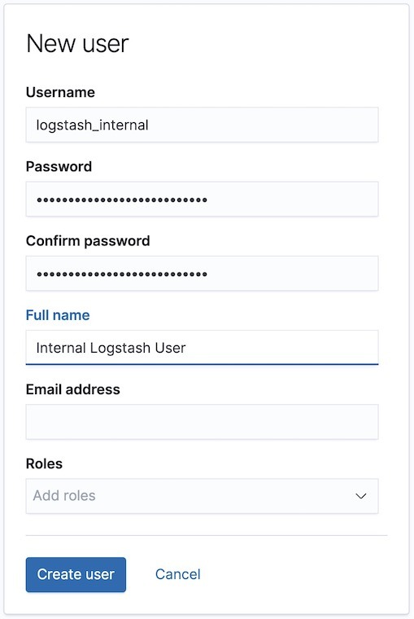

Tutorial: Getting started with securityedit
In this tutorial, you learn how to secure a cluster by configuring users and roles in Elasticsearch, Kibana, Logstash, and Metricbeat.
Before you beginedit
-
Install and configure Elasticsearch, Kibana, Logstash, and Metricbeat as described in Getting started with the Elastic Stack.
To complete this tutorial, you must install the default Elasticsearch and Kibana packages, which include role-based access control (RBAC) and native authentication security features. When you install these products, they apply basic licenses with no expiration dates. All of the subsequent steps in this tutorial assume that you are using a basic license. For more information, see https://www.elastic.co/subscriptions and License management.
-
Stop Logstash. The method for starting and stopping Logstash varies depending on whether
you are running it from the command line or running it as a service. For example,
if you are running Logstash from the command line, you can stop it by entering
Ctrl-C. See Shutting down Logstash. -
Stop Metricbeat. For example, enter
Ctrl-Con the command line where it is running. - Launch the Kibana web interface by pointing your browser to port 5601. For example, http://127.0.0.1:5601.
Enable Elasticsearch security featuresedit
When you use the basic and trial licenses, the Elasticsearch security features are disabled by default. To enable them:
-
Stop Kibana. The method for starting and stopping Kibana varies depending on
how you installed it. For example, if you installed Kibana from an archive
distribution (
.tar.gzor.zip), stop it by enteringCtrl-Con the command line. See Starting and stopping Kibana. -
Stop Elasticsearch. For example, if you installed Elasticsearch from an archive distribution,
enter
Ctrl-Con the command line. See Stopping Elasticsearch. -
Add the
xpack.security.enabledsetting to theES_PATH_CONF/elasticsearch.ymlfile.The
ES_PATH_CONFenvironment variable contains the path for the Elasticsearch configuration files. If you installed Elasticsearch using archive distributions (ziportar.gz), it defaults toES_HOME/config. If you used package distributions (Debian or RPM), it defaults to/etc/elasticsearch. For more information, see Configuring Elasticsearch.For example, add the following setting:
xpack.security.enabled: true
If you have a basic or trial license, the default value for this setting is
false. If you have a gold or higher license, the default value istrue. Therefore, it is a good idea to explicitly add this setting to avoid confusion about whether security features are enabled. -
Enable single-node discovery in the
ES_PATH_CONF/elasticsearch.ymlfile.This tutorial involves a single node cluster, but if you had multiple nodes, you would enable Elasticsearch security features on every node in the cluster and configure Transport Layer Security (TLS) for internode-communication, which is beyond the scope of this tutorial. By enabling single-node discovery, we are postponing the configuration of TLS. For example, add the following setting:
discovery.type: single-node
For more information, see Single-node discovery.
When you enable Elasticsearch security features, basic authentication is enabled by default. To communicate with the cluster, you must specify a username and password. Unless you enable anonymous access, all requests that don’t include a user name and password are rejected.
Create passwords for built-in usersedit
There are built-in users that you can use for specific
administrative purposes: apm_system, beats_system, elastic, kibana_system,
logstash_system, and remote_monitoring_user.
Before you can use them, you must set their passwords:
-
Restart Elasticsearch. For example, if you installed Elasticsearch with a
.tar.gzpackage, run the following command from the Elasticsearch directory:./bin/elasticsearch
-
Set the built-in users' passwords.
Run the following command from the Elasticsearch directory:
./bin/elasticsearch-setup-passwords interactive
You need these built-in users in subsequent steps, so choose passwords that you can remember!
This tutorial does not use the built-in apm_system, logstash_system,
beats_system, and remote_monitoring_user users, which are typically
associated with monitoring. For more information, see
Configuring credentials for Logstash monitoring
and Monitoring Metricbeat.
Add the built-in user to Kibanaedit
When the Elasticsearch security features are enabled, users must log in to Kibana with a valid user ID and password.
Kibana also performs some tasks under the covers that require use of the
built-in kibana_system user.
-
Configure Kibana to use the built-in
kibana_systemuser and the password that you created:-
If you don’t mind having passwords visible in your configuration file, uncomment and update the following settings in the
kibana.ymlfile in your Kibana directory:If you installed Kibana using archive distributions (
ziportar.gz), thekibana.ymlconfiguration file is inKIBANA_HOME/config. If you used package distributions (Debian or RPM), it’s in/etc/kibana. For more information, see Configuring Kibana.For example, add the following settings:
elasticsearch.username: "kibana_system" elasticsearch.password: "your_password"
Specify the password that you set with the
elasticsearch-setup-passwordscommand then save your changes to the file. -
If you prefer not to put your user ID and password in the
kibana.ymlfile, store them in a keystore instead. Run the following commands to create the Kibana keystore and add the secure settings:./bin/kibana-keystore create ./bin/kibana-keystore add elasticsearch.username ./bin/kibana-keystore add elasticsearch.password
When prompted, specify the
kibana_systembuilt-in user and its password for these setting values. The settings are automatically applied when you start Kibana. To learn more, see Secure settings.
-
-
Restart Kibana. For example, if you installed Kibana with a
.tar.gzpackage, run the following command from the Kibana directory:./bin/kibana
Configure authenticationedit
Now that you’ve set up the built-in users, you need to decide how you want to manage all the other users.
The Elastic Stack authenticates users to ensure that they are valid. The authentication process is handled by realms. You can use one or more built-in realms, such as the native, file, LDAP, PKI, Active Directory, SAML, or Kerberos realms. Alternatively, you can create your own custom realms. In this tutorial, we’ll use a native realm.
In general, you configure realms by adding xpack.security.authc.realms
settings in the elasticsearch.yml file. However, the native realm is available
by default when no other realms are configured. Therefore, you don’t need to do
any extra configuration steps in this tutorial. You can jump straight to
creating users!
If you want to learn more about authentication and realms, see User authentication.
Create usersedit
Let’s create two users in the native realm.
-
Log in to Kibana with the
elasticbuilt-in user. -
Open the menu. Go to Stack Management > Security > Users.
In this example, you can see a list of built-in users.
-
Click Create user. For example, create a user for yourself:
You’ll notice that when you create a user, you can assign it a role. Don’t choose a role yet—we’ll come back to that in subsequent steps.
-
Click Create user and create a
logstash_internaluser.In Getting started with the Elastic Stack, you configured Logstash to listen for Metricbeat input and to send the events to Elasticsearch. You therefore need to create a user that Logstash can use to communicate with Elasticsearch. For example:

Assign rolesedit
By default, all users can change their own passwords, get information about
themselves, and run the authenticate API. If you want them to do more than
that, you need to give them one or more roles.
Each role defines a specific set of actions (such as read, create, or delete) that can be performed on specific secured resources (such as data streams, indices, aliases, documents, fields, or clusters). To help you get up and running, there are built-in roles.
Open the menu and go to Stack Management > Security > Roles to see them:
Select a role to see more information about its privileges. For example, select
the kibana_system role to see its list of cluster and index privileges. To
learn more, see Indices privileges.
Let’s assign the kibana_admin role to your user. Go back to the Stack
Management > Security > Users page and select your user. Add the kibana_admin
role and save the change. For example:
This user now has administrative access to all features in Kibana. For more information about granting access to Kibana see Kibana authorization.
If you completed all of the steps in Getting started with the Elastic Stack, you should have Metricbeat data stored in Elasticsearch. Let’s create two roles that grant different levels of access to that data.
Go to the Stack Management > Security > Roles page and click Create role.
Create a metricbeat_reader role that has read and view_index_metadata
privileges on the metricbeat-* indices:
Create a metricbeat_writer role that has manage_index_templates and monitor
cluster privileges, as well as write, delete, and create_index privileges
on the metricbeat-* indices:
Now go back to the Stack
Management > Security > Users page and assign these roles
to the appropriate users. Assign the metricbeat_reader role to your personal
user. Assign the metricbeat_writer role to the logstash_internal user.
The list of users should now contain all of the built-in users as well as the two you created. It should also show the appropriate roles for your users:
If you want to learn more about authorization and roles, see User authorization.
Add user information in Logstashedit
In order for Logstash to send data successfully to Elasticsearch, you must configure its authentication credentials in the Logstash configuration file.
-
Configure Logstash to use the
logstash_internaluser and the password that you created:-
If you don’t mind having passwords visible in your configuration file, add the following
userandpasswordsettings in thedemo-metrics-pipeline.conffile in your Logstash directory: -
If you prefer not to put your user ID and password in the configuration file, store them in a keystore instead.
Run the following commands to create the Logstash keystore and add the secure settings:
set +o history export LOGSTASH_KEYSTORE_PASS=mypassword set -o history ./bin/logstash-keystore create ./bin/logstash-keystore add ES_USER ./bin/logstash-keystore add ES_PWD
You can optionally protect access to the Logstash keystore by storing a password in an environment variable called
LOGSTASH_KEYSTORE_PASS. For more information, see Keystore password.When prompted, specify the
logstash_internaluser and its password for theES_USERandES_PWDvalues.The Logstash keystore differs from the Kibana keystore. Whereas the Kibana keystore enables you to store
kibana.ymlsettings by name, the Logstash keystore enables you to create arbitrary names that you can reference in the Logstash configuration. To learn more, see Secrets keystore for secure settings.You can now use these
ES_USERandES_PWDkeys in your configuration file. For example, add theuserandpasswordsettings in thedemo-metrics-pipeline.conffile as follows:... output { elasticsearch { hosts => "localhost:9200" manage_template => false index => "%{[@metadata][beat]}-%{[@metadata][version]}-%{+YYYY.MM.dd}" user => "${ES_USER}" password => "${ES_PWD}" } }
-
-
Start Logstash by using the appropriate method for your environment.
For example, to run Logstash from a command line, go to the Logstash directory and enter the following command:
./bin/logstash -f demo-metrics-pipeline.conf
To start Logstash as a service, see Running Logstash as a service on Debian or RPM.
- If you were connecting directly from Metricbeat to Elasticsearch, you would need to configure authentication credentials for the Elasticsearch output in the Metricbeat configuration file. In Getting started with the Elastic Stack, however, you configured Metricbeat to send the data to Logstash for additional parsing, so no extra settings are required in Metricbeat. For more information, see Securing Metricbeat.
-
Start Metricbeat by using the appropriate method for your environment.
For example, on macOS, run the following command from the Metricbeat directory:
./metricbeat -e
For more methods, see Starting Metricbeat.
Wait a few minutes for new data to be sent from Metricbeat to Logstash and Elasticsearch.
View system metrics in Kibanaedit
Log in to Kibana with the user ID that has metricbeat_reader and kibana_user
roles (for example, jdoe).
These roles enable the user to see the system metrics in Kibana (for example, on the Discover page or in the Metricbeat system overview dashboard).
What’s next?edit
Congratulations! You’ve successfully set up authentication and authorization by using the native realm. You learned how to create user IDs and roles that prevent unauthorized access to the Elastic Stack.
Later, when you’re ready to increase the number of nodes in your cluster, you’ll want to encrypt communications across the Elastic Stack. To learn how, read Encrypting communications.
For more detailed information about securing the Elastic Stack, see:
- Configuring security in Elasticsearch. Encrypt inter-node communications, set passwords for the built-in users, and manage your users and roles.
- Configuring security in Kibana. Set the authentication credentials in Kibana and encrypt communications between the browser and the Kibana server.
- Configuring security in Logstash. Set the authentication credentials for Logstash and encrypt communications between Logstash and Elasticsearch.
- Configuring security in the Beats. Configure authentication credentials and encrypt connections to Elasticsearch. For example, see Configure Filebeat to use security features.
- Configuring Elasticsearch for Apache Hadoop to use secured transport.